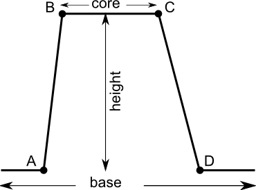
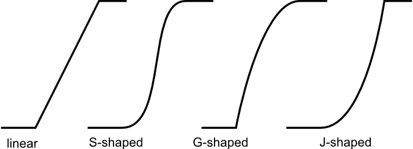
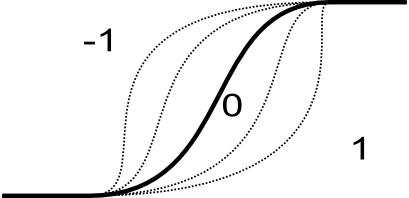

OPTIONS
input
Name of input raster map to be fuzzified. This map may be of any type and may
contain null values.
points
A list containing 4 (A,B,C,D) or 2 A,B) points defining set boundaries.
Points must not to be in map range, but it may lead to only 0 o 1 membership for
the whole map. For "both" side parameters range between A and D defines base,
but range between B and C core of the fuzzy set. Between A and B and C and D are
the set's boundaries. If side is "both" it require 4 points, else 2 points.
Fuzzy set definition:

side
This option indicates if the set is fuzzified on both sides (both),
or the left or right side. See description for details.
OUTPUTS
output
Map containing membership value of original map. Map is always of type
FCELL and contains values from 0 (no membership) to 1 (full membership). Values
between 0 and 1 indicate partial membership
FUZZY SET PARAMETERS
boundary
This parameter defines the shape of the fuzzy boundary. The default and most
popular is S-shaped, linear, J-shaped and G-shaped boundaries are also
available. The same boundaries are applied to both sides.
Boundary definition:

shape
Optional shape modifier. Range from -1 to 1. The default value is 0 and
in most cases should not be changed. Negative values indicate a more
dilettante set, positive values a more concentrated set. See description for
details.
Impact of shape parameter on shape boundary:

height
Optional height modifier. Range from 0 to 1. The default value is 1 and
indicates full membership between points B and C. If height is less than one the
maximum membership is equal to height. See image: Fuzzy set definition.
DESCRIPTION
Definition of fuzzy set
Fuzzy sets are sets whose elements have degrees of membership. Zadeh (1965)
introduced Fuzzy sets as an extension of the classical notion of set. Classical
membership of elements in a set are binary terms: an element either belongs or
does not belong to the set. Fuzzy set theory use the gradual assessment of the
membership of elements in a set. A membership function valued in the real unit
interval [0, 1]. Classical sets, are special cases of the membership functions
of fuzzy sets, if the latter only take values 0 or 1. Classical sets are in
fuzzy set theory usually called crisp sets. The fuzzy set theory can be used in
a wide range of domains in which information is imprecise, such as most
GIS operations.
NOTES
Calculation of boundary shape
Depending on the boundary type, different equations are used to determine its
shape:
Linear: the membership is calculated according to the following equation:
value <= A -> x = 0
A< value > B -> x = (value-A)/(B-A)
B <= value >= C -> x = 1
C< value > D -> x = (D-value)/(D-C)
value >= D -> x = 0
where x: membership
S-shaped: uses the following equation:
sin(x * Pi/2)^m (for positive shape parameter)
1-cos(x * Pi/2)^m (for negative shape parameter)
where x: membership, and
m = 2^exp(2,shape) (for positive shape parameter)
m = 2^(1+shape) (for negative shape parameter)
where m: shape parameter.
For the default shape parameter = 0, m is = 2 which is the most common parameter for
that equation.
G-shaped and J shaped: use the following equations:
tan(x * Pi/4)^m (for J-shaped)
tan(x * Pi/4)^1/m (for G-shaped)
where x: membership, and
m = 2^exp(2,shape) (for positive shape parameter)
m = 2^(1+shape) (for negative shape parameter)
where m: shape parameter.
SEE ALSO
r.fuzzy.logic,
r.mapcalc
REFERENCES
Zadeh, L.A. (1965). "Fuzzy sets". Information and Control 8 (3): 338--353.
doi:10.1016/S0019-9958(65)90241-X. ISSN 0019-9958.
Novák, Vilém (1989). Fuzzy Sets and Their Applications. Bristol: Adam Hilger.
ISBN 0-85274-583-4.
Klir, George J.; Yuan, Bo (1995). Fuzzy sets and fuzzy logic: theory and
applications. Upper Saddle River, NJ: Prentice Hall PTR. ISBN 0-13-101171-5.
Klir, George J.; St Clair, Ute H.; Yuan, Bo (1997). Fuzzy set theory:
foundations and applications. Englewood Cliffs, NJ: Prentice Hall. ISBN
0133410587.
Meyer D, Hornik K (2009a). \Generalized and Customizable Sets in R." Journal of
Statistical Software, 31(2), 1{27. URL http://www.jstatsoft.org/v31/i02/.
Meyer D, Hornik K (2009b). sets: Sets, Generalized Sets, and Customizable Sets.
R~package version~1.0, URL http://CRAN.R-project.org/package=sets.
AUTHOR
Jarek Jasiewicz
Last changed: $Date$